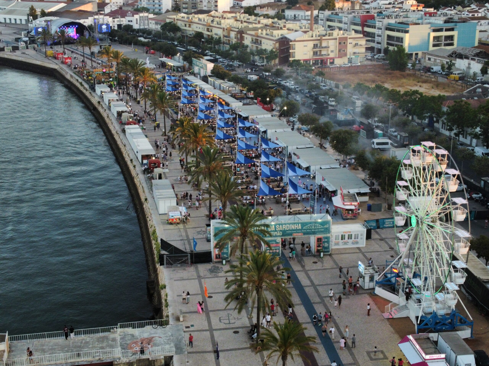

Venho todos os anos com a família. O cheiro a sardinha assada espalha-se pela cidade toda — é impossível resistir!
— Manuel Rodrigues, visitante de Lisboa
O Festival da Sardinha é o maior evento gastronómico do Algarve.

Todos os anos, em agosto, milhares de pessoas juntam-se em Portimão para celebrar o peixe mais famoso de Portugal.
O festival dura cinco dias, de quarta-feira a domingo. Há concertos à noite, atividades para crianças durante a tarde e, claro, muita sardinha assada do almoço ao jantar. A entrada é gratuita.
A estrela é a sardinha assada na brasa, servida com pimento e pão. Mas há muito mais: cataplana de marisco, xerém de conquilhas e doces de amêndoa e figo. Os restaurantes da zona servem menus especiais durante a semana do festival.
Venho todos os anos com a família. O cheiro a sardinha assada espalha-se pela cidade toda — é impossível resistir!
— Manuel Rodrigues, visitante de Lisboa
Local: zona ribeirinha de Portimão, junto ao rio.
Datas: primeira semana de agosto.
Horário: das 12h às 24h.
Preço: entrada gratuita.